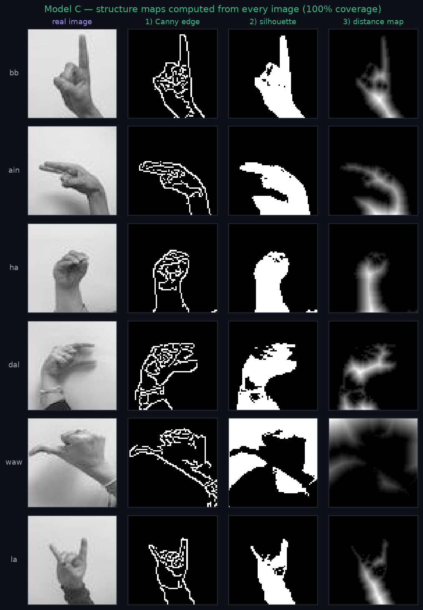
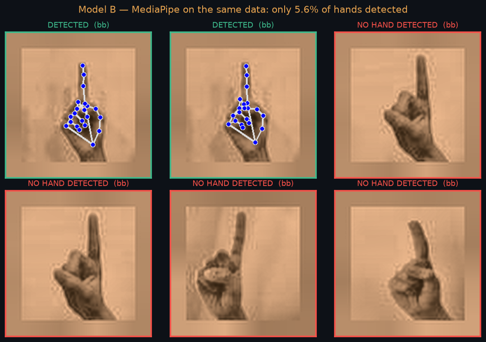
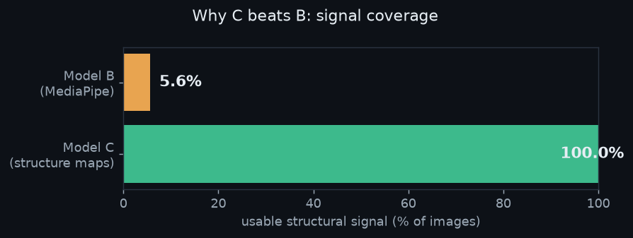
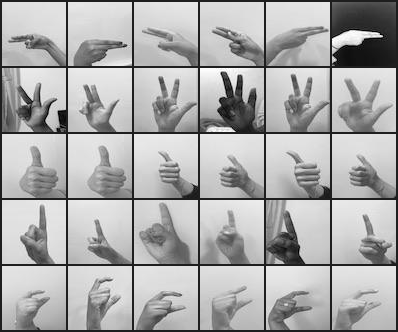
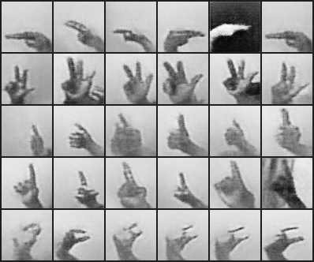
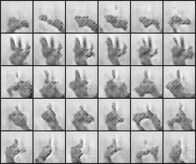
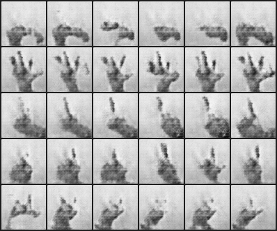

A visual, code-generated explanation on the real ArASL2018 images: how Model C turns each hand into a structure map, how Model B's MediaPipe mostly fails on the same hands, and why that gap decides the result.
← Back to reportsFor every image, Model C computes a 3-channel structure map straight from the pixels — Canny edges + silhouette + distance transform — and conditions the generator on it (plus the class label). The map is the hand shape, paired with its own image.

Model B's structural signal is 21 MediaPipe landmarks. But MediaPipe was trained on real RGB hands in a scene — on these tightly-cropped grayscale crops it mostly finds no hand at all, even after skin-tone colorization.


During training, Model B masks out every sample where MediaPipe failed — so its landmark loss is active on only ~2% of the batch and contributes essentially nothing. That's why B ≈ A in our run.
1Coverage. 100% vs ~2% — C always has a structural target; B almost never does.
2Correspondence. C's structure map and its target image are the same hand (paired), so the generator learns to render that exact shape. Models A and B compare a randomly-generated image to an unaligned real one → the only solution is the blurry class average (mode collapse). C removes this entirely.
5 classes × 6 samples each, from the 5K run.




| Model | Structural signal | Coverage | Recognition ↑ | Diversity ↑ |
|---|---|---|---|---|
| C | edge+silhouette+distance (input) | 100% | 0.968 | 0.300 |
| B | MediaPipe landmark (loss) | ~2% | 0.348 | 0.177 |
| A | none | — | 0.398 | 0.180 |
Bottom line: Model C wins because it always has a structural signal and that signal is correctly paired with the target image. Model B's MediaPipe signal exists for only ~2% of hands and was never paired — so it collapses to the class average, no better than having no signal at all.